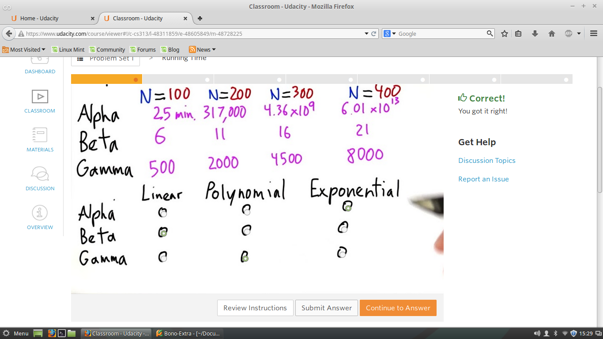
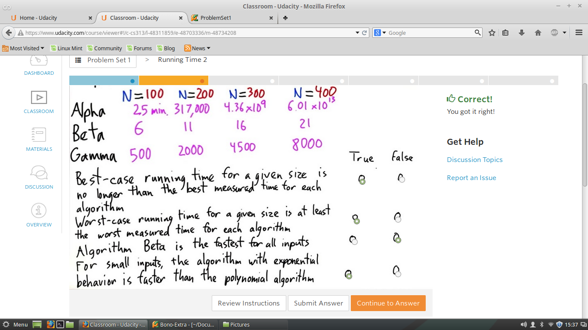
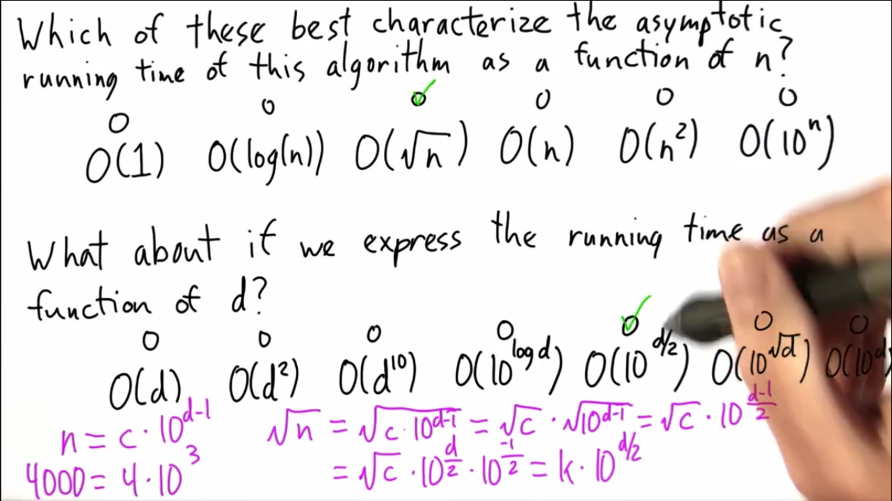
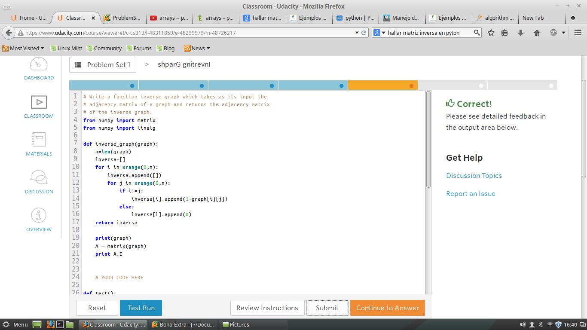
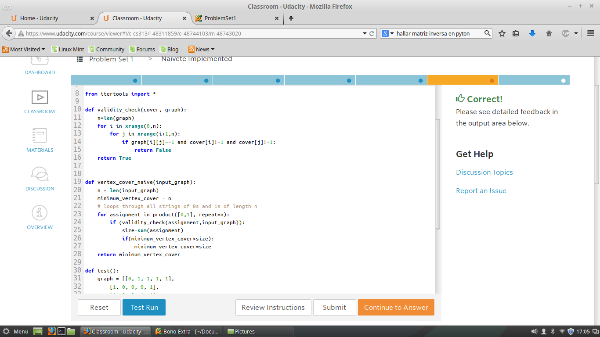
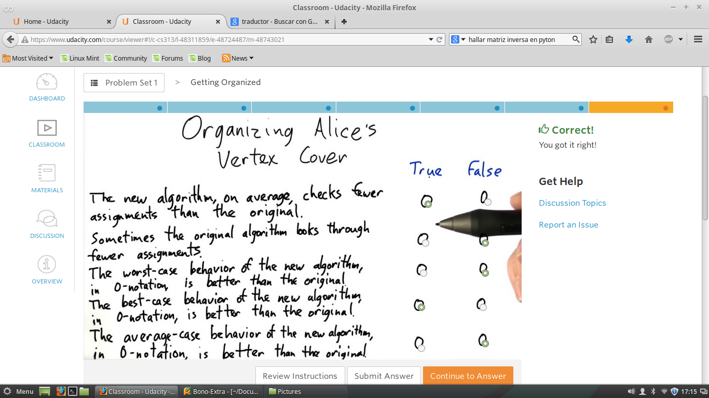
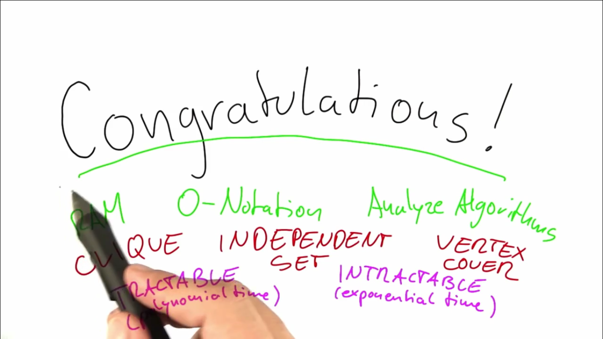

Problem Set 1
Test 1 - Tiempos de Complejidad
Alpha -> Eficiente
Beta -> Lento
Gamma -> Dificil

Test 2 - Tiempos de Complejidad 2<
Dadas las siguientes complejidades determinar, examinar cada una de las siguientes afirmacion .
que pueden se correctas(True) como incorrectas(False)

Test 3 -Hallar la Complejidad
Apartir de un algoritmo hallar la complejidad de este.
Y Hallar la complidad de determinar el numero de digitos de un numero (n).

Test 4 - Operaciones sobre Grafos
Cual es la Complejidad de Ejecucion para realizar cada una de las siguientes operaciones

Test 5 -Hallar Inversa de Matriz
Para el desarrollo del algoritmos que invierta una matriz tenemos este codigo en Python.

Test 6 - Aplicando el Problema de Alice
Se pide desarrollar el algoritmos que me indique cual es minimo numero de nodos que cubre todo el grafo.
Tenemos este codigo en Python.

Test 7 -Mejorando el Algoritmos de Alice

Quiz 8 -CLique
La idea es aplicando el concepto de Grafos, Aristas y Nodos o vertices.
Indicar cual es el grupo de nodos que hace que se conecte la mayoria de nodos en un grafo dado
Dando paso a la aplicacion de Clique

Quiz 9 - Independent Set
La idea es Similar al anterior quiz, solo que busca.
Indicar cual es el maximo numero de nodos que hace que no se conecte con los otros nodos en un grafo dado
Dando paso a la aplicacion de Independent Set

Quiz 10 - Cubrir todos los Aristas
Determinar cual es minimo numero de Nodos que cubren todas las conexiones posibles en el Grafo.

NOTA: - Reduccion
Reduccion es basicamente una transformacion entre dos Problemas.
Ya se para dar con un tipo de problema de Complejidad Polinomial a Exponencial
o a la inversa.
